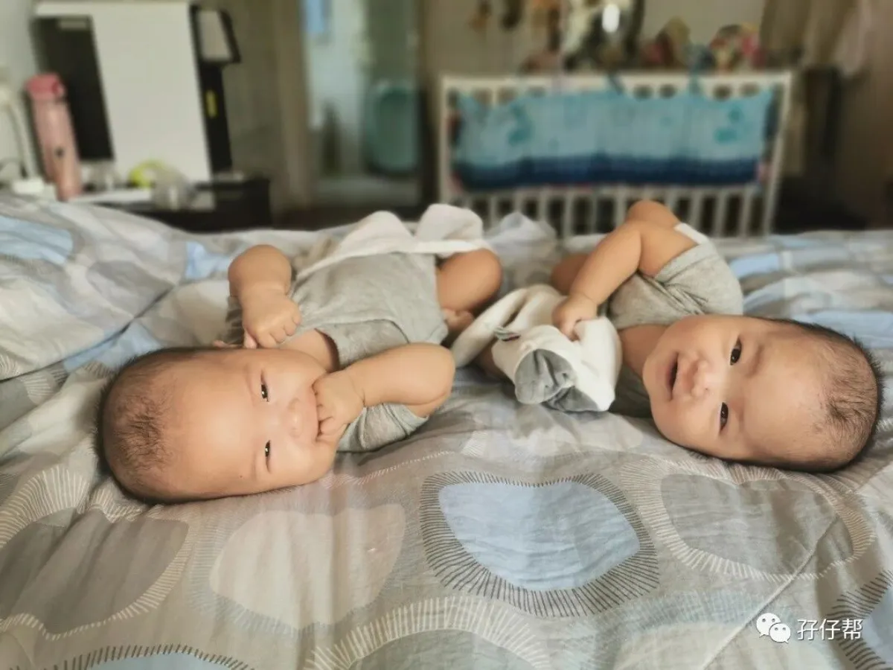
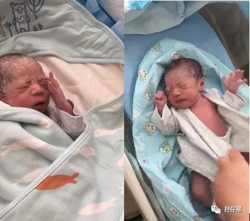
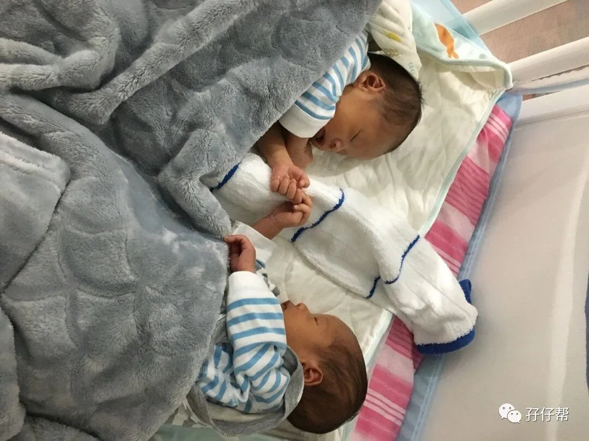
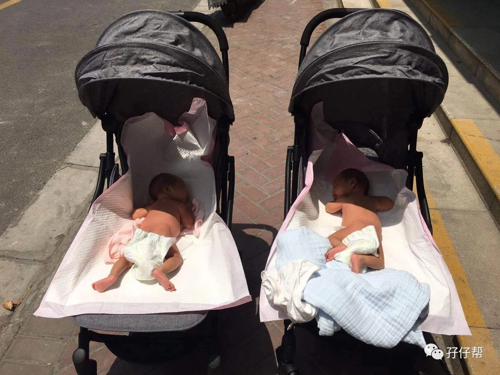
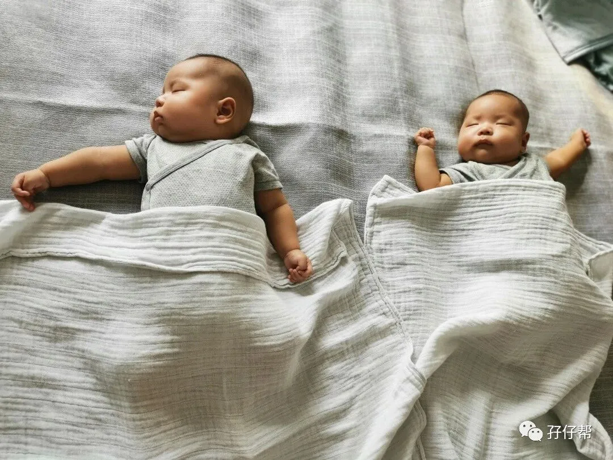
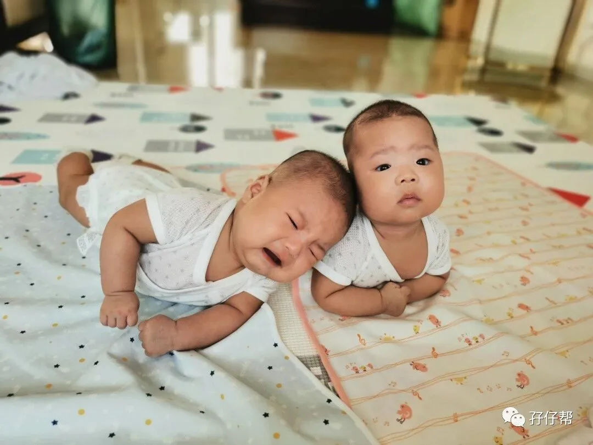
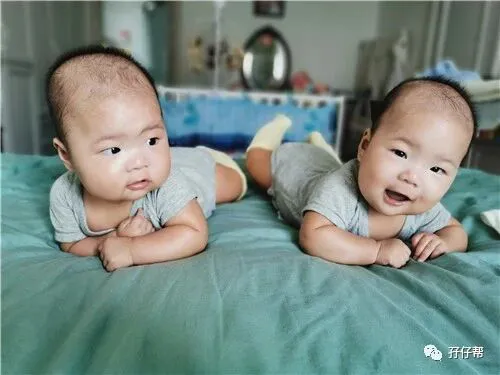

图文|双胞胎嚯嚯&哈哈妈妈
【帮主】圆圈妈妈：
这是孖仔帮双胎专栏【孖妈来了】的第一篇文章，来自双胞胎嚯嚯&哈哈妈妈的投稿。
文章非常自然朴实，文中的每一个细节都能让经历过的人感同身受，泪流满面，让尚未经历过但很快要经历的人瑟瑟发抖…
一起来看看双胞胎宝宝嚯嚯&哈哈这4个月来的成长经历吧！
· 正 · 文 · 来 · 啦 ·
双胞胎嚯嚯&哈哈妈妈@我是小透明：
双胞胎育儿群里最常出现的三个话题分别是孩子、猪队友和婆婆（爸爸群除外），聊到猪队友和婆婆往往都是各有特色，各有苦恼，聊到孩子最后不外乎都是吃喝拉撒睡的问题，每当和大家分享育儿经验时，难免想起自己这段时间的种种，今天就给大家伙分享下吧！
【01】
月子里
关键词：溶血性黄疸、玻璃心爆炸
“哥哥，2390g，10分，弟弟，2030g，10分。”
“医生，我们需要住保温箱吗？”
“不用，两个孩子状态都挺不错的。”
2019年5月5日，嚯嚯哈哈出生了，一切都很顺利，母婴同室！
面对这样一个良好的局面，刚生完孩子的我，当天就发布了喜讯，不断地回复消息，亢奋得两天两夜没合眼。
“小的黄疸超标，体重轻，晚些时候儿科医生会再来看。”
“体温都有点低了，快去办手续住进新生儿科吧。”
也许是因为自己乳头短小，两个宝宝在亲喂上耗费了太多的体力，导致他们连奶瓶都吸不利索，原本体重就较轻的哈哈在出生后第四天被送进了新生儿科，而嚯嚯也在第六天紧随其后住了进去。
队友那天回来就告诉我，哈哈已经确诊是溶血性黄疸，医院除了照蓝光之外，还注射了丙种球蛋白。
由于是单绒双羊，嚯嚯也被直接判定为溶血性黄疸，先照蓝光观察。
当时看到哈哈照蓝光的照片，特别心疼，瘦小的他胸口轻微下凹，戴着眼罩，插着针。但同时，我也很庆幸，及时发现是溶血性黄疸，早发现早治疗，避免了病情进一步恶化。
温馨提示：
特别是O型血且队友不是O型血的妈妈，千万不要因为产检的时候ABO溶血检验结果是低风险，就觉得自家娃肯定不是溶血性黄疸。
医生说检验结果只是一个参考，并不能排除患病的可能，即便真的确诊了，也不要太担心，照蓝光和打丙种球蛋白是副作用比较小的治疗方式，并且见效快。
只要宝宝体重增长的好，用不了多久就能接宝宝回家，嚯嚯和哈哈分别是在住院后的第四天和第六天就回家了。
伴随着嚯嚯哈哈的归家，新的问题又来了——母乳不够。
尽管在他们住院的那几天，我坚持每三小时吸一次奶，但奶量仍然不够，再加上乳头短小，他俩又吃过奶瓶，使亲喂实施起来特别困难，我感到非常挫败！
明明是自己的孩子，却不能抱在怀里好好吃母乳，而婆婆的到来让原本烦躁的我烦上加烦。她越是积极照顾着自己的孙子，越让我觉得哪怕没有我，他俩也能满足的在别人怀里吃着奶瓶长大。
同时，我还觉得自己为了他们牺牲了很多。要知道他俩的到来原本就是计划之外的事，我在前年连结婚的打算都没有，结果去年结了婚，甚至没多久就意外怀孕了，于是原本30岁实现财务自由、走上人生巅峰的宏伟计划彻底打了水漂。
在这种情况之下，当婆婆提出想要晚上抱走一个孩子和她同睡时，遭到我的强烈抗议，当晚就爆发了婆媳大战，最终由队友作为中间人进行了调停和解。
现在想来也未尝不是一件好事，通过那个契机，我发泄了自己长久以来的压力和不满，也幸亏婆婆确实是出于好意，队友也一直和我站在同一战线，我那颗玻璃心一点点地修复回来了！
温馨提示：
如果真的负能量满满的话，不妨说出来，哪怕自家队友不给力，也能和群里的妈妈们说，至少在我们群个个都乐意帮忙排忧解难。
【02】
一月龄
关键词：晒太阳降黄疸、攒肚
“黄疸要低于100umol/l才能打疫苗。”
嚯嚯哈哈出院时的黄疸分别是138umol/l和130.3umol/l，满月体检时，黄疸仍然是130+umol/l。
不过，这也是意料之中的事，大家都知道降黄疸需要多吃多排和晒太阳，多吃多排上我们没去吃茵栀黄，甚至还有一次便秘，并且逐渐有了攒肚的现象（莫名的早），至于太阳，因为家里采光的问题，那是从来都没晒过。
为了能够顺利在3个月前接种卡介苗，逐渐从月子中恢复了的老母亲开始了“晒娃”计划——每天早上9点左右把嚯嚯哈哈推到楼下，扒光，晒10分钟左右的太阳。这个见效非常快，两周过后，他俩的黄疸分别降到了70+umol/l和50+umol/l。
温馨提示：
关于晒太阳降黄疸，有很多注意事项。
第一，不能隔着玻璃，尽量多的暴露皮肤，保护好关键部位和眼睛，不然效果是会大打折扣的。
第二，时间不能过长，嚯哈就曾经被我们晒烫过，到了晚上还很热乎，我以为他们发烧了，还紧急去了医院，好在虚惊一场。
第三，我家之所以敢这样晒，是因为当时天气已经比较暖和了，如果天冷的话，应当做好保暖措施。
降黄疸的另一个要素是多吃多排，然而我家却遇上了攒肚，这点是我万万没想到的。之前看过的育儿书上提到：二月龄的宝宝才会遇上攒肚，嚯嚯哈哈竟然出了月子就开始了。
一开始家里人还担心是便秘，影响进食，对嚯嚯哈哈的菊花使用了削尖了的肥皂，现在想想真的是可怜，明明拉出来的都是正常的性状。
如果宝宝好几天没有排便了，千万别着急，可以在宝宝平静的时候摸摸肚子，如果是软绵绵的，就不是便秘，可以耐心等待一段时间。
另外，如果宝宝排便的时候非常使劲，也不见得是便秘，因为宝宝肛门括约肌尚未发育成熟，增加了他们排便的难度。当然，便秘的最终判定依据还是要看排泄物的性状。
【03】
二月龄
关键词：戒抱睡、放弃母乳
嚯嚯的脐带终于在两个月的时候脱落了，这下可以放心的给他俩戒抱睡了，在此之前，我特地在小红书上查找了各种戒抱睡的方法。
总结下来，其实就一点，没事不抱，除非宝宝实在哭得非常激烈。因此，在戒抱睡的初期，我就要求婆婆不能通过抱来哄睡他们。
起先，我先是和宝宝躺一起，然后把他抱在怀里，通过嘘声和轻拍来入睡。再后来，就只是用手臂环住，进行哄睡。到现在，有些时候只是单纯的嘘拍，他俩就入睡了。
虽然并不能算作是完全的自主入睡，但总比抱睡要强些，而且戒抱睡之后，可以通过引入睡眠仪式，让宝宝到点就乖乖睡觉，目前，嚯嚯哈哈晚上睡觉基本不需要人哄，关灯后就会逐渐开始冷静让自己入睡。
“坚持到三个月，如果母乳不够我就放弃了。”
双胎群里有不少纯母乳的妈妈，倔强的我备受鼓舞，一直以来都坚持搭配着亲喂每3小时吸一次奶。
可随着嚯嚯哈哈一点一点的长大，我越来越力不从心，不是因为奶不够，是因为自己一整天都在连轴转：亲喂→泡奶→喂奶→吸奶→洗刷刷→陪玩→哄睡，循环往复，实在是太累了，根本没有精力去更好的陪伴嚯嚯哈哈，而他们的吃奶量以及吃奶规律很难去进行准确把控。
综合各方面的情况，我萌发了断母乳的念头，他俩似乎懂我的心思，到后头自己拒绝了亲喂（一亲喂就容易大哭），我也就自然而然的断了。
温馨提示：
关于母乳，我觉得妈妈们都应该放平心态，别去强求，也别去钻牛角尖。现在的配方奶粉的配比已经很成熟了，奶粉宝宝一样能健康成长，并且，妈妈和宝宝之间并不是只有靠亲喂才能增进感情，每天在宝宝醒着的时候，陪他们玩游戏说话也一样可以。
【04】
三月龄
关键词：抬头退步
嚯哈兄弟在三个月体检的时候，还不会抬头，主要怪我之前疲于追奶，再加上先前他们都待在大床上，大床床垫又太软，基本没锻炼过他们。
为了不让他们落后于人，我立马买来了爬行垫，让两兄弟躺地上做操练抬头。
在实行了一周之后，嚯嚯已经可以把头抬得很高并保持一段时间了，可是哈哈却总是一副力不从心的样子，歪着个脑袋，但又过了两周，事情却出现了反转，原本抬头很好的嚯嚯抬不动了，哈哈倒是一副悠然自得的样子。
谁能想到，原来抬头也是会退步的，这一现象持续到他俩大约四个半月，嚯嚯突然就抬好，甚至还能蹬腿伸手。
温馨提示：
在大动作的发育上，妈妈们别太心急，只要没有异常情况，只需要耐心地帮助他们锻炼，等时候到了，宝宝自然就能做到了。
双胞胎嚯嚯&哈哈妈妈寄语：
挺过了艰难的五月，走过了谨慎的六月，熬过了磨人的七月，度过了愁人的八月，九月里的嚯哈兄弟已经四个月了。
他们开始不断掌握新技能，翻身、在婴儿床里打转、摸自己的大腿、伸手抓住眼前的玩具、只吸一根手指头、皱着眉头说话。
他们每一次的改变都让初为人母的我感到欣喜，期待他们后续带给我的惊喜，也希望小小的他们可以继续健康快乐的成长下去。
-END-
今日互动话题
#双胞胎出生后的前三个月，你是什么状态？
请用一个表情概括出来#
评论区聊一聊呗！
一关注孖仔帮一






